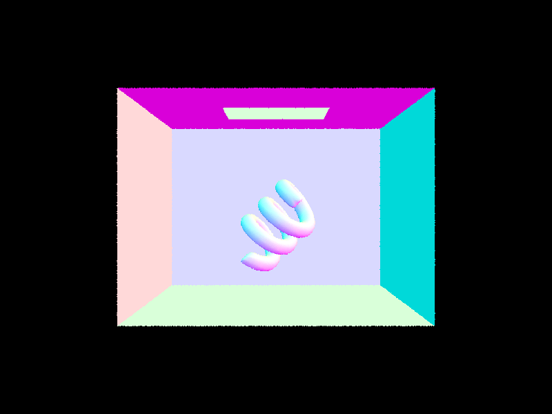
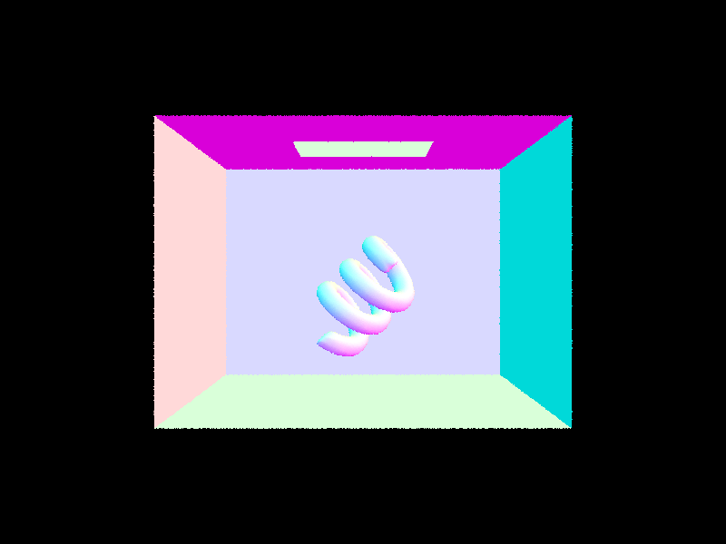
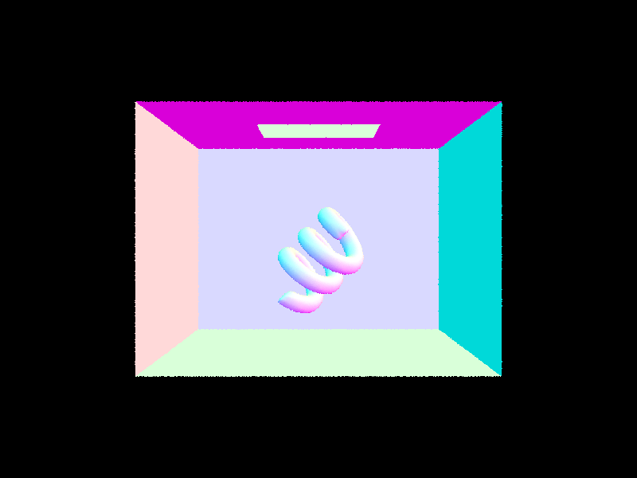
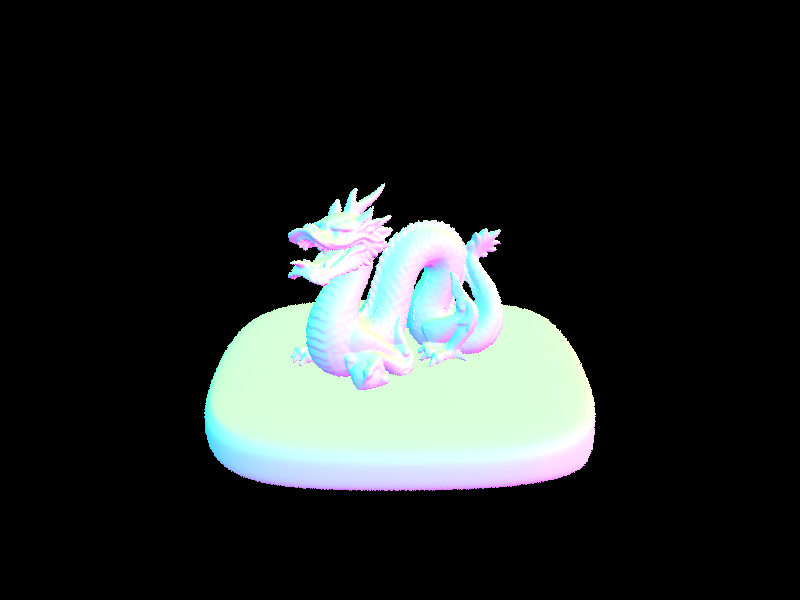
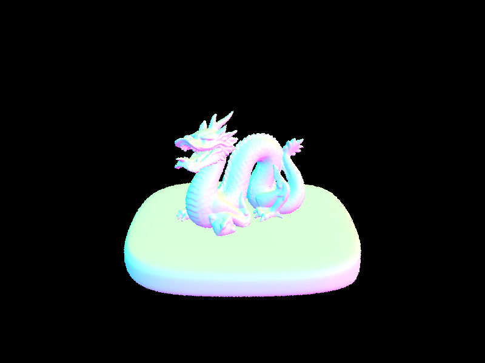

Author: Zineng Tang
This project focuses on implementing various techniques in computer graphics rendering, including ray generation, triangle intersection, BVH (Bounding Volume Hierarchy) construction, direct and indirect illumination, and adaptive sampling.
Ray Generation and Triangle Intersection: Implemented ray generation from the camera through each pixel, determining intersections with scene geometry using the Möller-Trumbore algorithm.
BVH Construction: Introduced a BVH acceleration structure to improve rendering efficiency.
Direct Illumination: Examined two sampling methods—uniform hemisphere sampling and importance sampling of lights—to calculate direct lighting.
Global Illumination: For indirect lighting, implemented recursive sampling based on the BSDF, employing Russian Roulette for termination.
Adaptive Sampling: Optimized rendering by varying sample rates per pixel based on variance in lighting conditions.
Ray generation involves creating rays that originate from the camera and pass through each pixel on the image plane. The process includes:
The triangle intersection algorithm determines if and where a ray intersects a triangle in the scene, based on the Möller-Trumbore intersection algorithm:

Bounding Volume Hierarchy (BVH) is a tree structure on a set of geometric objects. All geometric objects are wrapped in bounding volumes that form the leaf nodes of the tree. These nodes are then grouped as small sets and enclosed within larger bounding volumes. These, in turn, are also grouped and enclosed within other larger bounding volumes in a recursive manner until the whole scene is enclosed in a single bounding volume, forming the root of the BVH.
The heuristic chosen for picking the splitting point in the BVH construction algorithm is the Surface Area Heuristic (SAH). This heuristic minimizes the total cost of intersections by considering both the surface area of the bounding volumes and the number of primitives they contain. The SAH tries to find the split that minimizes the expression:
\(Cost = C_{trav} + (P_{L} \cdot A_{L} + P_{R} \cdot A_{R}) / A_{total}\)
By evaluating this cost for possible splits at different positions and choosing the one with the lowest cost, the algorithm effectively balances the tree, reducing the overall number of intersection tests required during rendering.
Below are images rendered using BVH acceleration with normal shading, which significantly speeds up rendering times for complex scenes.


 


The utilization of Bounding Volume Hierarchy (BVH) acceleration significantly improves rendering times across a variety of scenes with moderately complex geometries. When comparing the rendering times of scenes with and without BVH acceleration, it is evident that BVH acceleration drastically reduces the time required for rendering. This pattern is consistent across all tested scenes, showcasing the efficiency of BVH in handling complex geometries by effectively minimizing the number of intersection tests required. These results clearly illustrate the impact of BVH acceleration on rendering performance, making it an essential technique for reducing computational costs and improving the efficiency of rendering complex scenes.
| File | With BVH (s) | Without BVH (s) |
|---|---|---|
| CBdragon_microfacet_au.dae | 0.1178 | 445 |
| CBdragon.dae | 0.1335 | 521 |
| bunny_microfacet_cu_unlit.dae | 0.1028 | 411 |
| bunny_microfacet_cu.dae | 0.1042 | 451 |
| bunny_unlit.dae | 0.1054 | 468 |
| bunny.dae | 0.1043 | 435 |
This method samples directions uniformly across the hemisphere oriented by the surface normal at the hit point. It calculates the direct lighting contribution by casting shadow rays towards the sampled directions and checking for occlusions.
The main steps are:
This approach directly samples the light sources based on their contribution to the point of interest, which reduces variance and improves the quality of the rendering with fewer samples compared to uniform sampling.
The main steps are:
Both methods aim to accurately estimate the direct lighting component of global illumination by considering the light that arrives directly from light sources to the surfaces in the scene. The choice between uniform hemisphere sampling and importance sampling depends on the scene's complexity, the distribution and intensity of light sources, and the desired trade-off between render time and noise.
Based on the comparison of images provided, the renders utilizing light sampling demonstrate a noticeable reduction in noise, particularly within the softer shadows, when compared to those using uniform hemisphere sampling. This reduction is most evident in the transition areas between illuminated and shadowed regions. Light sampling results in images with clearer definition and contrast between these areas due to the sampling method's alignment with the distribution and intensity of the light sources. Conversely, hemisphere sampling's uniform distribution over the hemisphere does not consider light source directionality or intensity, leading to increased noise and less accurate depiction of shadow softness. The images showcase light sampling's advantages in scenes where soft shadows and nuanced lighting effects are significant to the overall visual impact. By focusing computational resources on areas with the most significant visual contribution, light sampling yields cleaner, more precise renders with fewer samples. This is particularly crucial in complex scenes with multiple light sources or materials with different reflective properties, where accurate shadows and light interplay are essential for realism. While light sampling offers clear benefits in noise reduction and shadow fidelity, it may also require additional computational effort to identify relevant light sources for each scene point, underscoring the critical trade-off between computational complexity and render quality in path tracing and global illumination.
Comparing the noise levels in soft shadows with different numbers of light rays during rendering.
The indirect lighting in our path tracer is computed by recursively sampling the scene's hemispherical light distribution. Starting with the direct lighting component, which is computed using either hemisphere or importance sampling, the algorithm then progresses to calculate indirect illumination. It does this by generating a new sample ray from the intersection point in a direction sampled from the BSDF. This new ray is recursively passed to the at_least_one_bounce_radiance function, which calculates the radiance contribution of the subsequent path segment. If the ray depth reaches the predefined maximum or the Russian Roulette termination condition is met, the recursion stops and the accumulated radiance is returned. Each sample's contribution is weighted by the cosine of the angle it makes with the normal at the intersection point and divided by the probability density function (PDF) associated with the BSDF's sampling strategy. This ensures that the illumination is unbiased and accurately represents the complex interplay of light in the scene. For non-delta materials, emission is returned directly, while for delta materials, which include perfect mirrors and glass, a special reflection or refraction shader is invoked to handle their unique interaction with light.
In the rendered images, the 2nd and 3rd bounces of light capture the subtle interplay of light as it reflects off multiple surfaces, adding depth and realism to the scene that rasterization typically lacks. These additional bounces allow for the simulation of complex lighting phenomena such as color bleeding, where light reflects off a colored surface and indirectly tints neighboring areas with its hue. This contributes significantly to the overall image quality, as it introduces a more of a natural light behavior.
We can see that after the 2nd iter the images are almost the same.
max_ray_depth = 100: Although this depth aims for an extremely high level of accuracy in simulating light transport, it's likely that visual differences between depth 100 and much lower depths like 4 or 5 will be minimal to the human eye.
We can see that by using higher sample rates, the smoother the scene becomes.
Adaptive sampling is an optimization technique that adjusts the number of samples taken per pixel based on the variance of the lighting within that pixel's region. The goal is to allocate more samples to areas with higher variance—typically edges or areas with complex lighting—to reduce noise, while using fewer samples in more uniform areas. In the implementation, we start by sampling each pixel a few times and computing the variance of the radiance. If the variance is above a certain threshold, we continue to sample, up to a maximum sample limit. This ensures that the computational effort is focused on areas where it is most needed, enabling faster rendering times without sacrificing image quality.